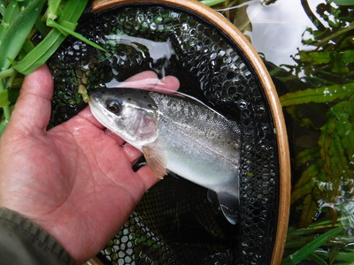
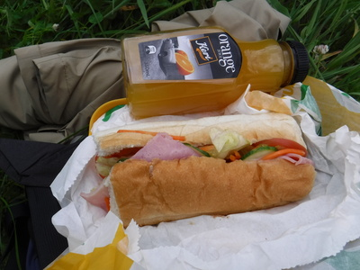
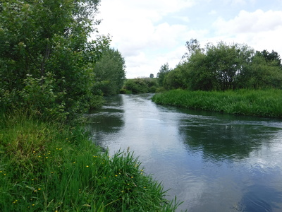
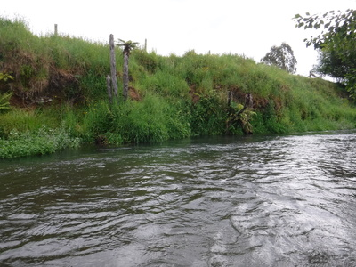
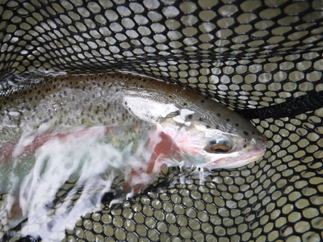

釣行日誌 ＮＺ編 「一期一会の旅：A Sentimental Journey」
レインボーたちの躍動
11/27(TUE)-2
対岸の淀みにミノーを打ち込み、アクションを付け始めた所でカツッ！とアタリ。今日の２尾目も30cmクラス。

柔らかいパックロッドで遊んでもらうにはちょうど良いサイズだ。しかし速く重い流れで育った野生の力は侮れないものがある。
この川は、鱒の生息数で言えばニュージーランドでも屈指の魚影の濃さなのだが、いかんせんアベレージサイズが小さい。しかし、時折50cmオーバーが掛かるので油断は出来ないのだ。まぁラインは６ポンドあるので大丈夫であろう。
夢中になって釣り続けていたが、午後２時前になり、さすがに空腹感を覚えたので岸辺に座り込んでランチとする。連日のサブウェイのサンドイッチだが飽きはしない。空腹は最良の調味料である。美味い。

もぐもぐとサンドイッチを頬張りながら、改めて水面を観察すると、昔より幾分水の色が濁ったような気がする。鱒の数も、若干ではあるが減ったような気がする。それともこちらの腕が悪いだけか？ その可能性は十分ある。（笑）
いずれにせよ、緑に囲まれた美しい流れを見ているだけで心が癒やされた。

お気楽なスピニングタックルでの釣り下りではあるが、水際のワイヤー柵を乗り越えたり下をくぐったりしながら移動するので、なかなかの重労働である。柵には電流は来ていないと思われたが、一応は触らないように心がけた。
連続した瀬の中で30cmクラスを２尾掛けるが、いずれもジャンプ１発でフックを外されてしまった。その下のカーブした大淵で、重いショックが！ 淵の真ん中で高いジャンプを披露し、少し寄せてから２回目のジャンプ。あと３メートルまで来たところで３回目のジャンプをして外された。今のは大きかった。実に悔しい。バーブ有りのシングルフックだが、ルアーだと重みがあるので鱒の素早い首振りでどうしても鈎を外されてしまう。鱒が空中に飛び出した瞬間にロッドティップを下げるのだが、あまり効果は無い。

対岸の草ギリギリに深みが見えたので、苦労して数投した後、何とかポイントにミノーが入った。少し流し込んで沈めてから引き始めると、２メートルほど引いたあたりで本日１番のショックが来た。流れに乗って良く走った、40cm級のレインボー。今日初めて使うダイワのレガリスというスピニングリールだが、ドラグの出来が良く微妙な調節が効くので、だいぶ助けられた。さすがにベールの返りは、あの一触即発のタッチ感のあるミッチェル409と思えば少々難があるものの、この性能が8,000円弱で買えるのだから文句はない。まぁせめてあの、「派手」をいささか通り越してしまった印象を受けるカラーリングはどうにかしてほしいところであるが。

鱒の数は減ったような気がするが、アベレージサイズは大きくなっているのかも知れない。気分良く、これが本日最後の１尾として切り上げることにした。時刻は午後４時半。今夜は大学時代に大変お世話になったジャックさんのお宅での夕食に招待されているので、５時半にハミルトン郊外のタマヘレという地区まで戻らなければならない。合流点まで川岸を戻り、泥の坂道を登って車に着き、道具を片付ける。濡れて汚れたウェーディングシューズと靴下を脱ぎ、裸足に靴だけ履いて車を出す。お礼を言おうと思ったが、牧場主のジムさん達の姿は見えなかった。
釣行日誌ＮＺ編 目次へ
サイトマップ
ホームへ
お問い合わせ